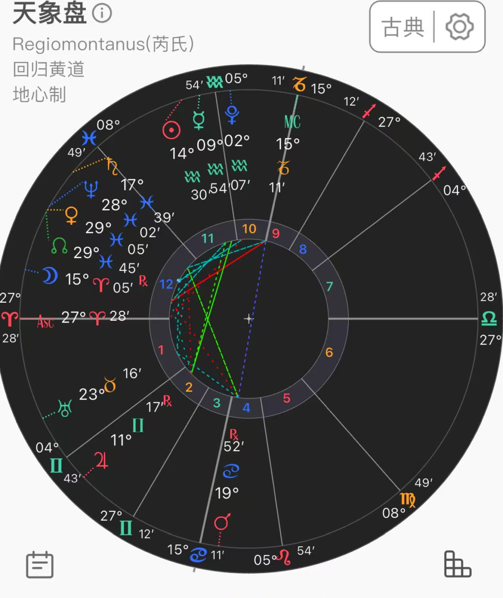
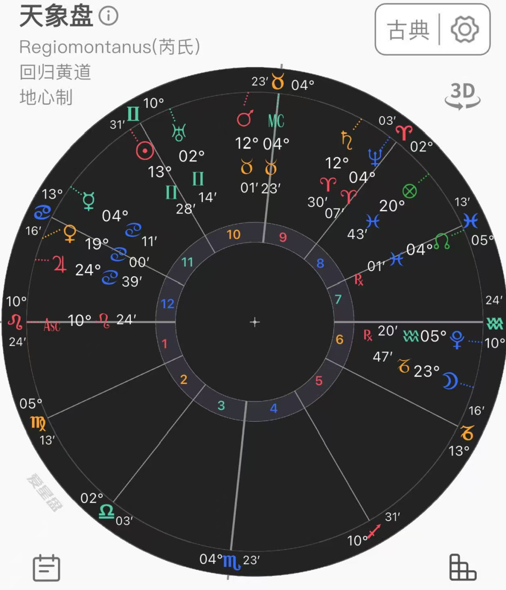
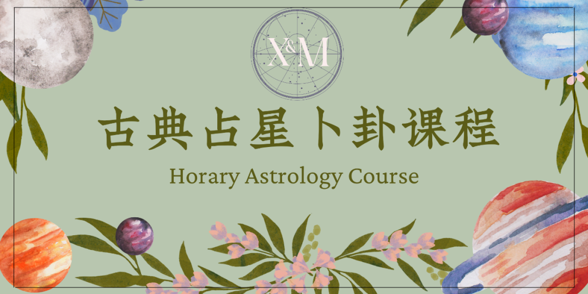

今天我们的话题有点沉重——来分享一些卜卦占星中判断死亡相关的论断。
小满一般不断寿命相关问题，但有一个情况例外——就是在紧急情况下看一个人遇到意外受伤能否挺过去，或者问某个疾病是否致死。收到最多的问题是亲人因为各种原因在ICU里，询问情况危不危险。
这类卦也不是完全不能看，或许也可以找找有没有转机、病势接下来会往哪里走的建设性建议。而且……或许也可以安抚一下案主？我偶尔会抱着这样的心态接卦……但实际上这样想是很不好的。文章末尾会解释。
anyways——现实中仍应始终以医生的诊断和治疗为第一优先哦！本内容仅为案例分析，不构成专业医疗建议。
判断死亡相关的技法参考
- 先看当事人：通常看命主星，这反映了他/她本人的状态。重点是命主星是否有尊贵、所在宫位性质、顺行且速度正常、脱离日光；以及是否受火星、土星等严重损害、被围困、逆行、失势或受灼伤。如果和凶星有联动，那就对比一下案主和凶星或者代表疾病/意外的星体哪个强，是否会压过命主星。
- 注意：很多时候不是案主来问自己的事情——本人在ICU里的话肯定不会坐起来跑来问卦。所以这里在一些情况下涉及到转宫。上述的命主星也指代转宫后当事人的宫主星。比如问父亲，就是4主。
- 命主是否和8宫有联动：8宫代表死亡。转宫后的8宫和原始的8宫都要看——特别是入相位8主。很多资料里说如果1宫主和8主是互溶接纳的状态，那代表不会死亡。但这不是绝对，要全盘审视的，接纳本身也未必足以消解危险。
- 月亮非常关键：是所问之事的进展——看她刚分离于谁、下一步将与谁形成相位。月亮若脱离受损的凶星、转而入相吉星，常是缓解或恢复的证据；反之入相凶星或死亡相关主星，危险会增加。
- 命主星停滞状态 = 生命停滞。但是命主星"将要逆行"的第一停滞，通常是病势受阻、反复或恶化的征象；但"由逆转顺"的第二停滞，反而可能表示恢复、重新获得力量。
- 命主星在下降点意味着生命的陨落。但也不是绝对——毕竟下降点在角宫，病人主星落在角宫常说明生命力有支撑。真正需要担心的是命主星严重受损、又被疾病或死亡的主星压制，且缺乏吉星、接纳或月亮后续转机的共同证据。
- 合相很凶的恒星可以帮助判断，比如心宿二、大陵五等等。
技法其实大差不差就这些！剩下的就是看卦会给我们什么信息，让我们去根据全盘判断，以及心法部分。
话不多说，上案例！
案例一 · 名人去世
这是之前我问的某个有名的人是否真去世了——因为当时他上热搜了，也迟迟没有实锤消息，就想说卜个卦看看他的状态。

取象：他对我来讲是一位名气比较大的陌生人，所以是7主火星。很多人认为名人是公众人物所以是10宫主，其实不然——要看那个人对自己的影响力。如果是自己的偶像、仰望、能控制自己的人，那可以是10宫。那这里我只是知道他而已，平时也没怎么了解，所以我用7宫。
- 这里火星和转宫后的8主木星有个离相位，也就是当事人已经接触到了死亡了。（为什么是木星不是火星——因为火星已经是当事人了，需要让出来。）
- 原始8主、12主金星，也压在了他的宫头上。但是我前面说过，如果案主和死亡的征象星是互溶的代表不会离去。这里是不是矛盾了？其实不一定的——互容且双方未被凶星严重伤害、又有吉星协助时，才是危中有转机的有力证据。这里火星接触过的木星虽是吉星，但是论宫性也是差得一塌糊涂，所以不论吉。
- 月亮会入相凶星火星……而且月亮同时也和这颗木星有个映点关系，也代表已经发生了。
值得注意的是——一般来讲映点在这类的问题是没有分量的，也就是说不参考！但这里为什么参考了——因为这就是问题背景啊，我本来也不认识当事人，就是个看热搜的，而这个映点刚好可以应对这件事情已经悄咪咪地发生了，只是迟迟不公布。所以映点与传闻背景相符，可以作为辅助信息。
而在卜卦后没多久就看到他的讣告了……
案例二 · 又一位名人
当时也上了热搜，也是还在ICU。我问她的情况是什么样的。

这里她是7主金星——金星双鱼座擢升，又合北交点看起来没啥事儿。重点是没有碰到任何凶星，也没有和8主木星以及转宫的8主水星有什么链接。这样看起来好像就没什么事了吗？NO——后来还是听到了她离世的消息。
如果这类的卦看多了，就会发现……很多看着危险的卦真的不一定会跟8宫有什么明显的关系。更多是需要我们用逻辑来判断。
比如这里当事人已经很危险在ICU了，她的金星在12宫是很虚弱的位置——12宫是医院的宫位，也代表她现在的受困。现在的金星对应现实是非常不好的处境了。但无论如何还是去到白羊座：这里是金星落陷的地方 = 她会恶化或者去往更糟糕的地方。有什么能比在ICU的情况还糟糕呢……
再加上月亮的下一个相位就是凶星火星了。而金星合相的北交点看似属吉，但是全盘的基调来看这里的北交点是放大属性——表示病情来到一个关键、被放大的阶段，但不自动表示转危为安，没有提供足够强的保护，反而把这个危重状态推到更显著的临界点。
而这个卦和之前的一个卦还有一个共同点也是映点关系：这个月亮也是和土星有个反映点，土星本身也代表death。
案例三 · 姥爷脑出血
案主的姥爷因为摔倒脑出血进了ICU，昏迷中，问后续情况。

姥爷是1主太阳，因为是妈妈的爸爸——太阳同时也代表生命力。
论能醒过来的 testimony：
- 太阳和8主木星碰不到，太阳得时，看着也还可以，在11宫升起阶段，看着或许能康复。
- 太阳刚刚六分相分离了土星——土星是6主（疾危宫），只是代表刚受到了伤害。不过接下来太阳也不会碰到任何的凶星。只是被死亡点定位星水星定位而已。但注意任何一个这类型的卦，死亡点只能作为辅助，不能是主要依据。所以我在没找到主要征象前不会因此论凶。
论凶的 testimony：
非常重要的一个结构：月亮马上要对冲8主木星！虽然月木也带接纳，但落宫非常的恶心——代表事件过程/当事人会在医院里碰到死亡。
所以这两条线索在打架！那关键的时候还是靠逻辑与常识。注意当事人是年迈的老人，情况是脑出血进ICU这种特严重的事。普通年轻人都不一定能挺过来的，更何况是老人。
所以我们的看卦思路就要转一下了。不是看他是否会离去，而是看他能否活下去。这种情况下是需要卦有强烈的线索说明他能醒来的。那这里太阳接下来也遇不到任何能帮助他的星体，刚分离的土星代表了昏迷符合卦情。Frawley说过，在过去，遇到特别凶险的事情后的昏迷，其实就等同于死亡了。这个卦，盘面缺少足以扭转危局的强恢复证据。还有一个很明显很恶心的月木对冲。
反馈是几天后离世了。
案例四 · 奶奶车祸
看了几个BE的卦……来一个结果好的吧。这个卦案主问奶奶车祸了，但家人微信通知了一下她后不回消息了。情况未知，案主十分着急就找我问卦看看后续。

这里奶奶是金星1主（4之10），看着舒服多了。
首先是宫头合相恒星角宿一，代表情况或许没有那么糟糕！然后金星在角宫也代表奶奶身体素质是有能力扛过去的，并且合相吉星木星入相位带接纳！接下来身体情况也有机会好转。
反馈就是腿骨折了，精神状态不太好……也算是不幸中的万幸。
马后炮的话：金星合相木星在腿骨的位置10宫，木星也代表血液，落在巨蟹座=大腿淤青十分厉害。而10主月亮反映点了土星，也指腿部骨头受伤。
总结
遇到这类问题必须非常谨慎——因为盘面大部分更多是吉凶拉扯、征象模棱两可。所以除了技法本身，对现实处境和事情运作逻辑的把握也很重要。
还有一点也特别重要：就是我一开始说的，如果抱着想要缓解来访者的焦虑、安慰对方的心态接卦——这是不可取的。首先本身这种问题很难做到完全理智，因为我们都会希望所问的人没事，于是很容易出现偏见。比如在吉凶各半时，会不自觉地更相信、也更放大那几个偏好的好征象，再加上一点动机性推理，会替自己想看到的结果寻找更多理由。在这样的心理加持下会让本来好判断的问题复杂化……
